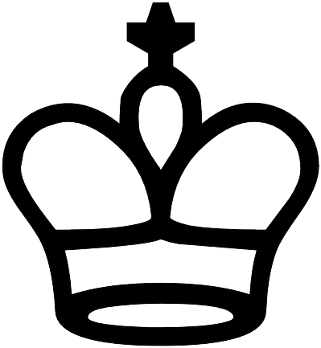
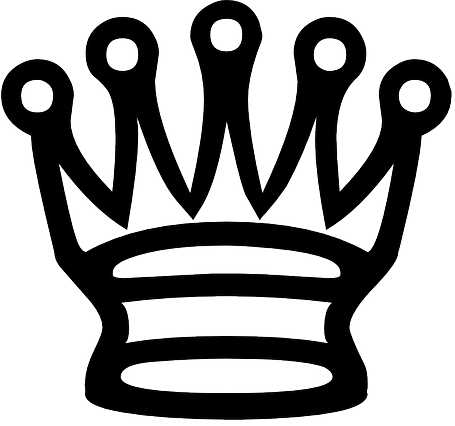
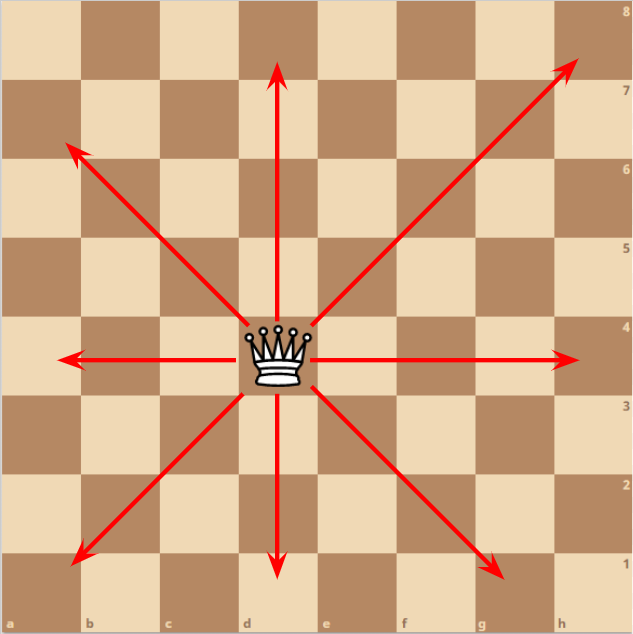
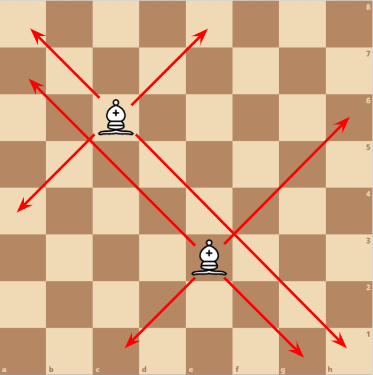
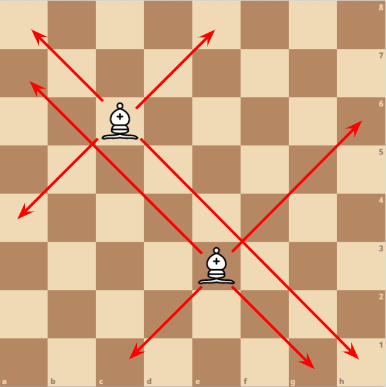
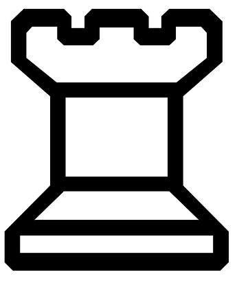
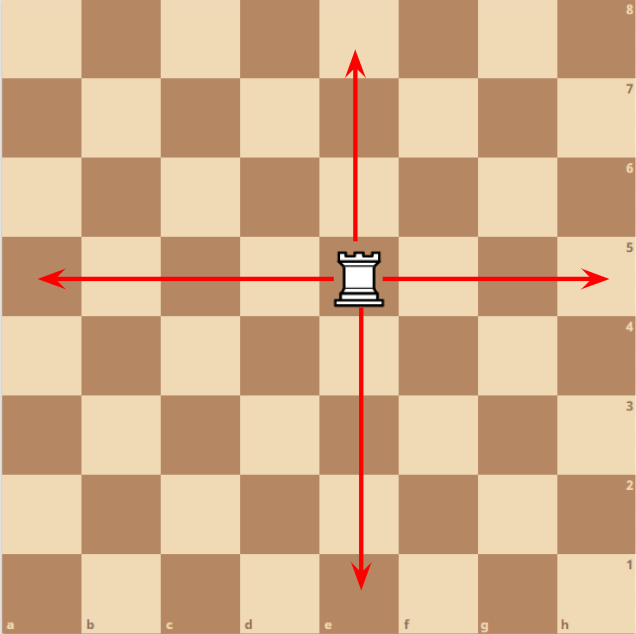
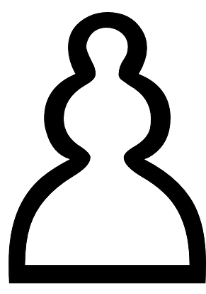
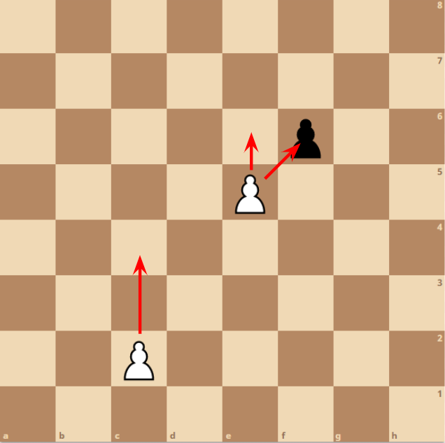
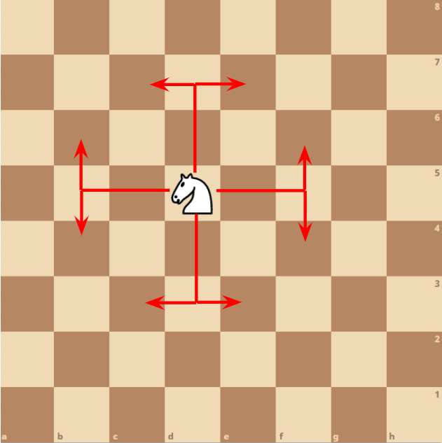

The Board
The board consists of eight rows and eight columns for a total of 64 squares of alternating colours. Each square has a unique alphabet from a to h and number from 1 to 8. Each player has eight pawns placed on the second nearest row to the player. The remaining pieces are placed on the row nearest to the player. With two rooks placed at each of the corners, the knights on the square next to the rook. With the bishops placed next to the knights. The queen is positioned on the same colour square as the queen. King is placed on the remaining square.
King

King can move exactly one square horizontally, vertically or diagonally. The king cannot move onto a square that is a threat to the king with an opponent piece. A player loses when the king is placed into checkmate.
Queen
 Queen can move any number of squares horizontally, vertically or diagonally. It cannot move through pieces of the same colour and captures a piece of the opposite colour by moving onto its square.
Bishop
 

Pawns can move forward one square after the first move of the pawn. The first move of a pawn can move two squares forwards. A pawn cannot move backwards. Pawns can only capture pieces in front diagonally from it’s left or right.
Rook
 Rook can move any number of squares vertically or horizontally. It cannot move through pieces of the same colour and captures a piece of the opposite colour by moving onto its square.
Pawn
 Bishops can move any number of squares diagonally. It cannot move through pieces of the same colour and captures a piece of the opposite colour by moving onto its square.
Knight
Knights can move two squares forwards, backwards, left or right, then one square horizontally or vertically. Viewed as an L shape. The knight is the only piece able to jump over or pass through other pieces. It captures a piece of the opposite colour by moving onto its square.
Checkmate
When a piece is moved it puts the opposing king in check. The king must get out of check in the next turn. The attacking piece may be taken by the king or another piece. Another piece may be moved between the attacking piece and the king, but not for knights. If the king is unable to move and is in check the king is in checkmate. The game finishes and the player who’s king in checkmate loses. Stalement is a draw, it happens when one king is unable to move also not in check.